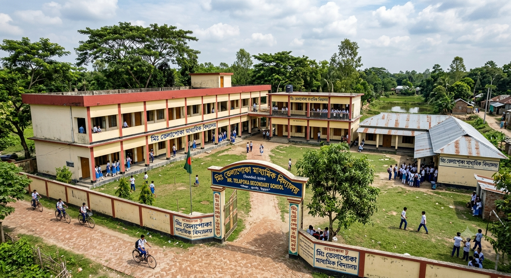

Welcome to Mr .Telapoka Secondary School. We are dedicated to nurturing our students into responsible citizens of tomorrow. Our curriculum blends modern education with strong moral values to ensure holistic development.

"An Overview of Mr. Telapoka Secondary School"
Campus & Surrounding Environment
The school is nestled in a serene, countryside setting surrounded by lush greenery, mature trees, and a calm pond nearby. This natural backdrop creates a peaceful and refreshing atmosphere perfectly suited for learning away from the city's hustle.
Architectural Layout
The campus features a blend of modern concrete structures and traditional rustic buildings:
The Main Blocks:A prominent two-story academic building with long, open corridors where students can stand and look out over the entire courtyard.
The Heritage Wing: Adjacent to the main concrete buildings is a classic tin-roofed structure, beautifully preserving the traditional architectural heritage of rural schools in the region.
The Grand Entrance
At the front stands an arched monumental gateway (main gate) that proudly displays the institution's unique name, "Mr. Telapoka Secondary School," neatly written in both Bengali and English. A secure boundary wall encloses the entire perimeter, ensuring a safe environment for the students.
Student Life & Courtyard
At the heart of the campus is a spacious green grass field featuring a central flagpole where the national flag flies high. The courtyard comes alive with the chatter of students dressed in neat blue-and-white uniforms. Some gather in groups during breaks, while others arrive or head home on bicycles along the brick-paved path, capturing the timeless essence of school life.